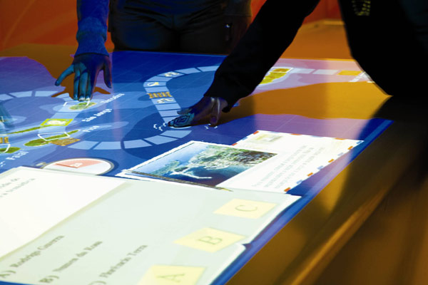

Home
Home Usage
Usage Components
Components Documentation
Documentation References
References Download Zip
Download Zip Clone Repository
Clone Repository Github Repository
Github RepositoryInter Haptics
Inspiration
The motivation behind the project came to me rather unexpectedly , I fancy reading books from a broad genre and it so happened that one day I brought this book by the name of “Einstein Factor: A Proven New Method for Increasing Your Intelligence” by Win Wenger and Richard Poe. Normally ,anything to do with Einstein has fascinated me but this book came about me a bit differently, one of the most prolific idea mentioned in the book was about “Image Streaming”, it claimed that although the number of neurons everyone is born with is same ,it is the glial cells that multiply based on the interaction vis-à-vis the environment. It suggested reciting audibly whatever came to the mind under a peaceful meditative mood by encompassing all the senses(hearing, touch, smell etc.). This method as stated in the book was proven to increase the cognition and hence the intelligence of the person. This spurred me to think that when it comes to virtual reality projections like Interactive Spaces, the key sense of tactile feedback from the environment is missing in the human-environment interface, thus restricting the potential of the cohesion of the real and the virtual world.
Brief Note
This project basically tries to implement a system wherein things that appear in Virtual reality devices like Hololens,Occulus etc can be felt . It revolves around adding tactile perception to virtual reality by using Ultrasonic transducers.By manipulating their phase and amplitude it is possible to create a pressure point in space which can be felt by human hands and hence the space can be scanned pretty much like a CRT scanning the TV screen to simulate texture ,shape etc.
Benefits
• Interactive spaces extending to civil engineering or architecture can be reinforced with Ultrahaptics to provide intricate details about the texture, feel , its elasticity ,strength of the material to be used.
• Augmenting airports and other busy public terminals with interactive spaces can greatly increase the efficiency and in general the customer experience .Air communication can be revolutionized by adding this project to Geo-referenced Map Servers such as Google Earth, Geoserver to develop haptic holographic geo-maps as in Avatar (Not to seem a bit too farfetched but I believe at the pace technology is moving ,this could be possible, moreover imagination and hope is the quintessential human thought that keeps us pushing new boundaries).
Still from Avatar(2009): This is what I believe to be possible by amalgamating interactive-spaces and haptics.
• In the field of medicine ,near real 3D surgical simulations can be implemented .Enhanced CAT scans , 3D human body mapping and tissue orientations, 3D organ imaging augmented with haptics. Medical trainees are not provided with the privilege of trial and error and so this project can be used to stage complex surgeries before they are performed on actual patients.
• In apparel industry where prototyping can be done with the inclusion of this project for deciding the texture of the cloth to be used for mass production of the apparel .
• In educational institutions where the explanation of certain situations might not be feasible ,interactive spaces combined with Ultrahaptics can be used to realize those situations. Extending the idea of smart classrooms to a new level wherein teaching of subjects like physics, chemistry and biology to name a few can be revolutionized. The key role will be of implementing Image Streaming sort of learning and interaction through the project.
• Its most profound and extensive usage will probably be in the area of gaming where while virtual reality as already made its stand ,its yet to add any form of real physical feedback from the virtual world to the real world and this project might well provide the Kinaesthetic feedback which augments the surroundings experienced in the virtual world with the tactile feedback necessary for the completion of the reality to be perceived from the gaming experience.
• Enriching the experience offered by interactive-spaces by incorporating tactile feedback thereby allowing greater interaction and hence furthering the assimilation of the virtual and real world .
Interactive Spaces
Interactive Spaces are physical spaces with interactivity, mixing the virtual world with the physical world. Imagine walking into a room and having that room recognize where you are in the room and have the room respond in some way.
Interactive Spaces (IS) was created for an Experience Center on the Mountain View Campus of Google, which was to contain interactive displays. IS is the software glue that holds the activities in the Center together. It was started in 2011 and the Center went live in 2012. The interactive displays in the Center were a collaboration between Google and the Rockwell Group’s LAB division. Google wrote the IS code. Rockwell wrote the activities which run in the Center using a combination of the Interactive Spaces APIs and also wrote some of the software for some of the pieces that weren’t supported by IS for the initial release of that project. The initial implementation didn’t have everything envisioned for the project, but contained enough of an API for all of the initial installations planned for the Center and many of the pieces needed to run a production installation. For more details check out